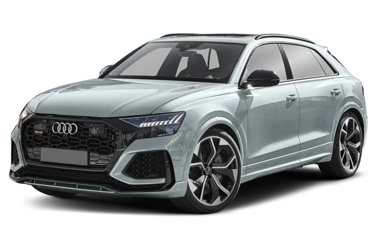

RS series
RS3=this model comes in a hatchback and sedan it has a 2.5 liter turbo inline 5 makes 401hp and does 0-60 in about 3.5 seconds.
RS4=this model only comes as a wagon and has a 2.9 liter twin turbo v6 making 450hp and it does 0-60 in about 4 seconds.
RS5=this model is available in a coupe or sportback sedan it also has a 2.9 liter twin turbo v6 making 450hp and does 0-60 inabout 3.5 seconds and its my personal favorite.
RS6=this only comes in a avant[wagon] and has a 4.0 liter twin turbo v8 making 620hp and does 0-60 in a whopping 3.2 seconds.
RS7=this model is a sportback and is very simalar to the rs6 it has a 4.0 liter twin turbo v8 makes 620hp and does 0-60 in 3.2 seconds.
R8=this model isnt a rs its acually a R but its pretty much the same thing you can get it with a 5.2 liter V10 making 610hpand does 0-60 in 3 seconds!
RSQ3=this is a compact suv it has a 2.5 liter inline 5 making 400hp and does 0-60 in 4.5 seconds.
RSQ8=this model is a fairly large suv with a 4.0 twin turbo v8 making 630hp and does 0-60 in 3.2 seconds.
